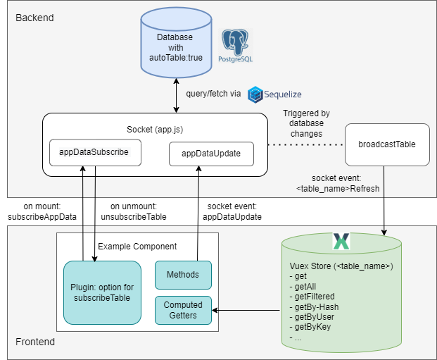

Data Transfer
CARE implements a data subscription mechanism between the backend and the frontend, enabling real-time collaboration and automatic synchronization of database tables with the Vuex store in the frontend application.
Data Flow
{kind=link}

Prerequisites
Model sets
autoTable = trueto be mirrored into Vuex.Component declares
subscribeTable: ["<table>"](or object form) to receive pushes.
Step-by-step (Backend → Frontend)
DB model (top-center “Database”): The model sets
autoTable = trueto enable automatic Vuex store table creation and participate in app data sync.Subscribe (bottom-left “Example Component” → center “Sockets”): On mount, the
subscribeTableplugin emitssubscribeAppDatafor each table to Sockets (AppSocket, center); the server returns asubscriptionId.Access-aware filtering (center “Sockets” ↔ top-center “Database”): Before sending any data, Sockets applies the model’s
accessMap/publicTableviagetFiltersAndAttributesso each socket only receives permitted rows/columns.Initial snapshot (center “Sockets” → bottom-right “Vuex Store”): The server calls
sendTableand emits<tableName>Refreshto the Vuex Store (right) with the current rows. The same event name is used later for updates.Socket write (optional; bottom-left “Example Component” → center “Sockets”): The frontend emits
appDataUpdatewith{ table, data }to create or update rows.Backend transaction (center “Sockets” → top-center “Database”):
updateDatavalidates, applies defaults, and enforces access; inside a transaction it persists changes to the Database (top-center). On commit (afterCommit) the server aggregates changed rows ofautoTablemodels. See also: MetaModel behavior for the shared logic used inupdateData, including soft-deletion, access filtering, and hook handling.Broadcast (center “Sockets” → right “Vuex Store”):
broadcastTablere-applies per-socket visibility withgetFiltersAndAttributes(admins/public can bypass) and emits<tableName>Refreshonly to relevant subscribers; Vuex (right) receives the updated data.Vuex merge (right “Vuex Store”): Each autoTable module handles the
<tableName>Refreshmutation and merges rows (seerefreshState);refreshCountincrements.Computed → Component (lower-left “Computed Getters” → bottom-left “Example Component”): Components read via Vuex getters (e.g.,
getAll,getFiltered); computed properties update and the Component re-renders automatically.
Tip
Two directions in the diagram
Downstream:
<tableName>Refresh: (Sockets → Vuex) is used for the initial snapshot and all subsequent updates.Upstream:
appDataUpdate: (Component → Sockets) performs a write; after commit the server pushes<tableName>Refreshto keep everyone consistent.
Unsubscribe (on unmount; bottom-left “Example Component”)
The component emits unsubscribeAppData(subscriptionId); the socket removes the subscription so no further <tableName>Refresh events are delivered.
sendTable
Purpose: send the current snapshot for a table and emit updates to the client.
Preconditions: only works for models with
autoTable = true; otherwise it no-ops with a log.Filtering: starts with
{ deleted: false }and OR-adds any providedfilter; then applies per-socket access viagetFiltersAndAttributes(may also add allowed columns).Attributes: excludes sensitive fields by default (e.g.,
deleted,deletedAt,updatedAt,rolesUpdatedAt,initialPassword,passwordHash,salt).Injects: supports
{ type: "count", table, by, as }; counts related rows and injects the result into each entry asas.Related tables: if the model’s
autoTable.foreignTablesorautoTable.parentTablesare set, it also fetches those and emits<relatedTable>Refreshfor them.Emit & return: always emits
<tableName>Refreshwith the rows and returns the same data.
AppDataUpdate Socket
The appDataUpdate socket is the generic way to create or update rows in models with autoTable = true. It is defined in backend/webserver/sockets/app.js inside the AppSocket class:
/**
* Update data for a specific table to the client.
*
* Acts as a wrapper around the underlying `updateData` method, using a Sequelize
* transaction if provided, and returns the outcome to the caller.
*
* @socketEvent appDataUpdate
* @param {Object} data The input data from the frontend
* @param {String} data.table The name of the table to update
* @param {Object} data.data New data to update
* @param {Object} options Additional configuration parameter
* @param {Object} options.transaction Sequelize DB transaction options
* @returns {Promise<*>} A promise that resolves with the result from updateData
*/
async updateAppData(data, options) {
return await this.updateData(data, options);
}
This method wraps the internal updateData logic. It checks access permissions, validates required fields, applies defaults, and then either creates a new row or updates an existing one. All operations run inside a transaction, and on commit the modified rows are broadcast to subscribed clients (see Data Flow).
When to use
Create a new row in an autoTable model — omit
idor set it to0.Update an existing row — include
idand the fields to change.Soft-delete / quick state toggles — include
idwith one ofdeleted,closed,publicorend; the server updates immediately.Not for reads — data is delivered via
<tableName>Refreshafter you subscribe withsubscribeAppData.Don’t use for non-
autoTablemodels or bulk/admin maintenance — use dedicated endpoints instead.
How to use
From the frontend you call:
this.$socket.emit("appDataUpdate", {
table: "<table_name>", // must be an autoTable model
data: { /* fields */ } // include id for updates, omit for create
}, (result) => {
if (result.success) {
// result.data contains the new or updated id
} else {
// result.message contains a human-readable error
}
});
Tip
Create: omit
idor set it to0Update: include
idQuick state toggles: if you send an
idwithdeleted,closed,publicorend, the server will update immediately without requiring other fields.
Example usage in the frontend
A typical usage pattern is emitting the socket event and showing a toast depending on the result.
// Close a study (from Study.vue)
this.$socket.emit("appDataUpdate", {
table: "study",
data: { id: studyId, closed: true }
}, (result) => {
if (result.success) {
this.eventBus.emit('toast', {
title: "Study closed",
message: "The study has been closed",
variant: "success"
});
} else {
this.eventBus.emit('toast', {
title: "Study closing failed",
message: result.message,
variant: "danger"
});
}
});
Important
The server response has the shape: { success: true, data: <id> } on success, or { success: false, message: "<error>" } on failure.
Fast path: If id is present and any of deleted, closed, public or end is included, the server updates the row immediately via updateById (skips required-field checks and nested recursion). closed: true is stored as a timestamp. After commit, the change is broadcast via <tableName>Refresh as usual.
Backend Update Logic
Typical component actions map to small appDataUpdate calls:
Delete - soft-delete a row:
this.$socket.emit("appDataUpdate", { table: "user", data: { id, deleted: true } }, cb);
Convert to child item: Create/update a parent and send child rows in an array field. The server detects
fieldsof typetableand recursively runs updates for each child, injecting the parent’s foreign key.Fast-path updates: If an entry has an
idand includes one ofdeleted,closed,publicorend, it is updated immediately without requiring other fields (schema required-field checks are skipped for these toggles).Timestamp semantics for
closed: The backend storesclosedas a timestamp. Passing{ closed: true }sets it to the current time (seeMetaModel.updateById).
Important details
Validation: On create, required fields are checked and defaults are applied if not set through the frontend.
Access control: if
userIdis provided, the server verifies the caller is allowed to update for that user.Nested tables: if the model defines fields of type
table, the server recursively callsupdateDatato update child rows.Broadcasts: after a successful commit, all subscribed clients receive the updated data automatically.
Store Updates & <table>Refresh Events
Sockets broadcast table changes via events named <tableName>Refresh. Each autoTable module
registers a mutation with that exact name and merges incoming rows using refreshState.
Mutation shape (generated per table):
[websocketPrefix + table.name + "Refresh"]: (state, data) => {
// table-specific pre-processing (e.g., annotation/comment tweaks) may occur here
refreshState(state, data, (table.name !== "tag"));
state.refreshCount++;
}
Merge behavior:
The helper function refreshState determines how incoming rows are handled:
Existing entries with the same
idare overwritten with the new data.Entries with
deleted: trueare removed from the Vuex store.
export function refreshState(state, data, removeDeleted = true) {
if (!Array.isArray(data)) data = [data];
data.map((entry) => {
if (!entry.deleted) {
state.data[entry.id] = { ...state.data[entry.id], ...entry };
} else if (removeDeleted) {
delete state.data[entry.id];
}
});
}
Tip
If you don’t see updates, verify:
the model has
autoTable = true,the component declared
subscribeTable: ["<table>"],the same
<tableName>Refreshmutation fires for the initial snapshot and later updates (check Vue devtools).
Frontend access patterns and the list of available getters are documented in Vuex Store. For inspecting Vuex modules, socket messages, and mutations with browser devtools, see Debugging.
Subscribe DB in the Frontend (when & where)
Use subscribeTable in route views or components that actively display changing table data; unsubscription happens automatically on unmount.
On mount, the plugin checks for a component option subscribeTable and emits subscribeAppData for each entry; on unmount it emits unsubscribeAppData(subscriptionId). The server tracks subscriptions per socket in socket.appDataSubscriptions and uses them to decide which clients receive updates.
// Minimal usage (string form)
export default {
subscribeTable: ["nav_element"]
}
// Object form supports optional filter/inject
export default {
subscribeTable: [
"nav_element",
{ table: "document",
filter: [{ projectId: 42 }],
inject: [{ type: "count", table: "comment", by: "documentId", as: "comments" }]
}
]
}
Accessing the Vuex Store in Components
Use the generated getters under the table/<name> namespace directly in computed:
computed: {
// all documents
documents() {
return this.$store.getters["table/document/getAll"];
},
// filtered by project
projectDocuments() {
const pid = this.$store.getters["settings/getValueAsInt"]("projects.default");
return this.$store.getters["table/document/getFiltered"](d => d.projectId === pid);
},
// single by id
doc() {
return this.$store.getters["table/document/get"](this.$route.params.id);
}
}
Available getters per autoTable module:
get(id)→ object by idgetAll()→ all rowsgetFiltered(fn)→ filter predicategetByHash(hash)→ first row by hashgetByUser(userId)→ rows by userIdgetByKey(key, value)→ rows whererow[key] === valuelength→ number of rowsrefreshCount→ number of times the table has been refreshedhasFields/getFields→ schema metadata if available
Collaboration Use Case
This subscription system enables real-time collaboration:
If one user modifies a row (e.g., adds an annotation), all other users subscribed to the same table immediately receive the updated data.
By maintaining a per-user subscription list, the backend ensures that only relevant users are notified about changes.
This approach avoids polling and keeps all connected clients synchronized with the authoritative state in the database.